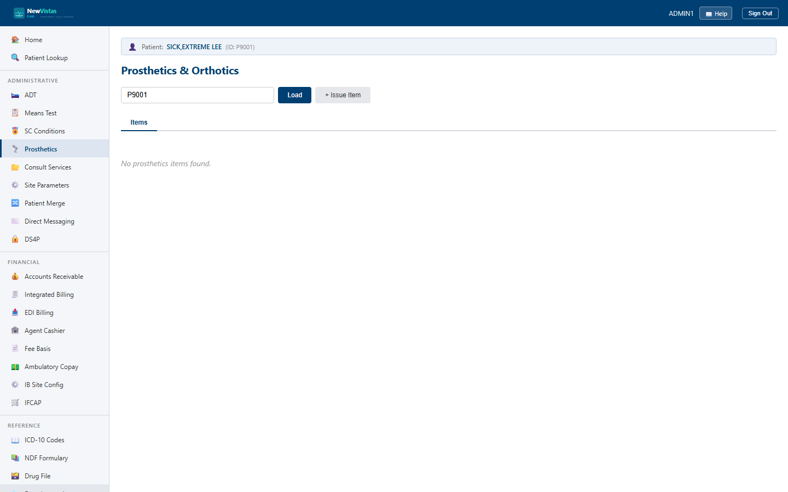

Manual › Administrator › Prosthetics
Prosthetics & Orthotics
The Prosthetics screen records prosthetic and orthotic items issued to a patient — the item and its HCPCS code, cost and vendor, warranty, delivery, fitting, patient satisfaction, and ongoing maintenance. It's the equivalent of VistA's Prosthetics (RMPR) package.
Open Prosthetics and load a patient
- In the sidebar, under Administrative, click Prosthetics (or go to
/prosthetics). - In the Patient ID field, type the patient ID (e.g.
P9001) — or it picks up the current patient context if one is already selected. - Click Load (or press Enter) to list that patient's issued items.

What you see
- Items tab — each issued item with its date, description, HCPCS code, category, cost, an SC marker, and a status badge.
- Detail tab — opens when you click a row; shows vendor, warranty, delivery, fitting, satisfaction, and next-maintenance details, plus the section forms.
Issue a new item
- Click + Issue Item to open the form.
- Enter the Item Description (e.g. Below-Knee Prosthesis) and optional HCPCS code.
- Pick the category (Prosthetic, Orthotic, Sensory Aid, Wheelchair, or Other), and set date issued, quantity, and cost.
- Choose the issuing provider (defaults to the logged-in provider), location, and whether it is service-connected.
- Click Issue. The item appears in the list.
Work an item's detail
Click any row to open the Detail tab, which stacks section forms:
- HCPCS Code and Cost & Vendor — set or correct the billing code, cost, and vendor.
- Warranty, Delivery, and Fitting — record warranty dates, delivery method/tracking, and fitting notes.
- Patient Satisfaction — record a 1–5 rating.
- Schedule Maintenance and Maintenance History — set the next maintenance date and add maintenance records (type, technician, cost, notes).
Tip
Each section form saves on its own and shows a green confirmation, so you
can issue an item, then set its warranty, record delivery, and log a
fitting in sequence without leaving the Detail tab.